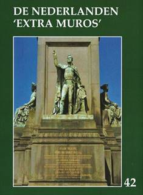
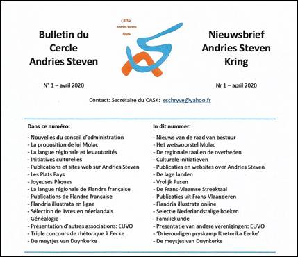
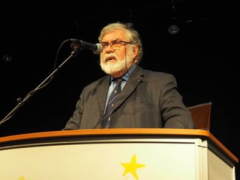

> nieuwsbrief
> 38e jg. - 3e trimester 2020
Hernieuwen
ledenbijdrage voor 2020
Wanneer u
deze Nieuwsbrief onder ogen krijgt hebben de leden
die hun bijdrage tijdig vereffenden ondertussen ook al het
jaarboek De Nederlanden ‘extra muros’ 42 (2020)
ontvangen
De
minimumbijdrage bleef behouden op 29 €. Vanaf het bedrag van
35 € boeken we u met dank als steunend lid. Vereffening graag
via onze rekening IBAN: BE13 4648 2202 5139 – BIC: KREDBEBB
t.n.v. Vereniging/Stichting, Paddevijverstraat 2, 8900 Ieper.
Uw e-postadres
Doorheen de jaren hadden
we al ruim honderd e-postadressen van leden kunnen opslaan.
Helaas is een computerchrash er de oorzaak van dat die info
verloren gegaan is. Mogen we iedereen die over een e-adres
beschikt vragen om ons dit toe te sturen op ons
administratie-adres maurits.cailliau@skynet.be
? Dit zou het ons de gelegenheid bieden om deze leden sneller
en gerichter te informeren dan onze drie-maandelijkse Nieuwsbrief
het mogelijk maakt.
De Nederlanden ‘extra muros’ 42 (2020)
Ook dit 42e Jaarboek De Nederlanden ‘extra
muros’ brengt weer een breed palet aan bijdragen over de
randgebieden van onze Lage Landen die deel uitmaken van ons
geschiedkundig erfgoed. En als steeds openen we ook deze
editie met de korte bijdrage die zowat in een notendop het
“programma” van Zannekin
verwoordt.
Dick Wortel komt als eerste aan het
woord met De Nederlandse taal in Frans-Vlaanderen. Het
betreft de uitgeschreven versie van zijn lezing op de
Ontmoetingsdag van Zannekin te Leiden in het najaar van 2019.
In het najaar van 1964 werd Jean-Marie
Gantois’ 60e verjaardag feestelijk gevierd op het
grafelijk Slot van Male nabij Brugge. Bij die gelegenheid
sprak de gevierde zijn beklijvende rede Bezinning bij een
verjaardag uit. Na zoveel jaren past het ons daarover
andermaal te bezinnen, temeer daar die feestviering de
onmiddellijke aanleiding was tot de (her)oprichting van de
huidige Vereniging/Stichting Zannekin. Als bijlage daarbij een
overzicht van de bijdragen gewijd aan J.M. Gantois in onze
jaarboekenreeks.
Johan Hellinx verrast ons met Een
Belgisch-Nederlandse kijk op het Brussel van Charlotte
Bronté. De zussen Emily en Charlotte arriveerden anno
1842 in het toen nog grotendeels Nederlandstalige Brussel.
Verder wordt stilgestaan bij het op die tijd en de Bronté’s
terugblikkende werk van Jolien Janzing en Nathalie Stalmans.
In Een wandeling door Den Haag
neemt Jan van Tongeren ons mee op een leerrijke
geschiedenisles doorheen de residentiestad, waarbij aan tal
van aspecten in het straatbeeld stilgestaan wordt. Een
herinnering aan onze Ontmoetingsdag van enkele jaren terug,
maar evenzeer een handzame handreiking voor wie op z’n eentje
op verkenning wil gaan.
Wim van Heugten nam een
onafgewerkte studie van z’n overleden broer Wiro weer ter hand
waarin de focus uitgaat naar leven en werk van De
Maaslandse heilige Sint-Hubertus. Daarbij wordt ook veel
aandacht besteed aan de talrijke pelgrimswegen en
bedevaartsoorden in deze.
Johan Hellinx is in dit jaarboek
andermaal present met een eerste luik over De strijd van
de Geuzen in de ontluikende Belgische literatuur. Daarin
wordt vooral stilgestaan bij de geuzenromans van de
West-Vlaming Henri Moke, die al in 1827 debuteerde als
romancier en rekenen kon, op de steun van koning Willem I.
Drie jaar later kwam er een bruusk einde aan de Verenigde
Nederlanden en diende de nieuwe staat op zoek naar een
legitimatie voor zijn bestaan. Moke wist aan die gewijzigde
context een mouw te passen.
In De Lage Landen, gisteren en
morgen blikt Maurits Cailliau terug en vooruit
op de geschiedenis van onze Lage Landen. Hij betreurt daarbij
het verraad van de Vlaamse beweging ten overstaan van haar rol
bij de Heel-Nederlandse bestrevingen, waarbij ze de Belgische
begrenzingen niet weet te overstijgen.
Met de Kroniek en boekbesprekingen
sluiten we traditioneel ons jaarboek af. In de kroniek wordt
wat breder stilgestaan bij de heilige Godelieve en het recente
memobord in haar geboorteplaats Heimfriedswilder nabij Bonen
(Bouloge) en in de boekbesprekingen bij het boekje van Eric
Vanneufville over Jean-Marie Gantois dat veel te wensen
overlaat.
Bio- en bibliografische bijdragen over Jean-Marie Gantois in de Jaarboeken De Nederlanden ‘extra muros’, doorheen de jaren
Maurits Cailliau
De bibliotheek Jean-Marie Gantois, in Jaarboek 1
(1977), pp. 101-117
Document
Paul Foucart en Jean-Marie Gantois, in Jaarboek
2 (1978/1979), pp. 109-112
Ward Corsmit
Anno 1952: een reis naar Brachay, Haute Marne,
ballingsoord van Jean-Marie Gantois (1904-1968), in
Jaarboek 5 (1983), pp. 101-106.
Jean-Marie Gantois Sint-Godelieve,
in Jaarboek 6 (1984), pp. 117-128.
Ward Corsmit
Priester J.M. Gantois uit Waten, Frans-Vlaanderen:
een visie op het Heel-Nederlands erfdeel van de Vlaamse
mystiek, in Jaarboek 11 (1989), pp. 87-96.
Maurits
Cailliau
Jean-Marie Gantois en ZANNEKIN, in Jaarboek 16
(1994), pp. 133-148.
Antoon Lowyck
Uit het leven van Jean-Marie Gantois, in
Jaarboek17 (1995), p. 111-142
Pieter Jan Verstraete J.M. Gantois en
J.M. Perrot: twee parallelle levens, in Jaarboek19
(1997), pp. 121-132.
Kurt Ravyts
De Zuid-Vlaamsche Jeugd, in Jaarboek 19 (1997),
pp. 133-150.
Kristof Papin
De visie van de Franse pers op het proces Gantois,
in Jaarboek 20 (1998), pp. 65-82.
Wido Bourel
Een getuigenis over Jean-Marie Gantois, in
Jaarboek 33 (2011), pp. 149-162.
Jean-Marie Gantois Scheldebron
– Adelbron, in Jaarboek 37 (2015), pp.15-40.
Jos Vinks
Jean-Marie Gantois, in Jaarboek 38 (2016), pp.
77-114.
Hendrik Blanckaert Herinneringen
aan Jean-Marie Gantois, in Jaarboek 38 (2016), pp.
115-116.
Jean-Marie Gantois Geestelijk
testament, in Jaarboek 40 (2018), pp. 53-90.
Jean-Marie Gantois Bezinning
bij een verjaardag. Rede te Male, 1965, in Jaarboek 42
(2020).
Op jacht naar Nederlandstalige teksten in Frans-Vlaanderen
Dick Wortel, Leiden
Frans-Vlaanderen maakte tot ver in de
zeventiende eeuw deel uit van het Nederlandse taalgebied. In
de middeleeuwen behoorde dit gebied tot het Graafschap
Vlaanderen. Als verzetsdaad tegen de Franse koning in Parijs
stimuleerde Graaf Gwijde het gebruik van het Nederlands. Het
Latijn van de oorkonden werd vervangen door het Nederlands.
De eerste oorkonden in het Nederlands werden al in de
dertiende eeuw gepubliceerd. Deze oorkonden zijn opgenomen
in het z.g. Corpus-Gysseling, dat op zijn beurt de
bouwstoffen leverde voor het Oudnederlands Woordenboek. Het
oudste Nederlands is afkomstig uit het gebied dat thans
wordt aangeduid als Frans-Vlaanderen. Voor het onderzoek
naar de geschiedenis van de Nederlandse taal is
Frans-Vlaanderen van zeer groot belang.
Literaire rijkdom
Historici en historisch taalkundigen
hebben al in meerdere publicaties het vermoeden geuit, dat
zelfs het oudste Nederlandse zinnetje “Hebban olla vogala
nestas hagunnan” afkomstig is van een monnik die in
Frans-Vlaanderen moet hebben geleefd. Andere
taalwetenschappers hebben in hun publicaties, onder meer in
het Jaarboek van de Vereniging/Stichting Zannekin, gewag
gemaakt van het klooster van Sint-Bertijn in Sint-Omaars, dat
al in de achtste eeuw een rijke bibliotheek moet hebben gehad,
waarin bijvoorbeeld volksverhalen en volksliederen uit de tijd
van Karel de Grote werden verzameld. Dit alles wijst op een
rijke Nederlandstalige literaire en culturele sfeer in het
Frans-Vlaamse gebied.
Frans-Vlaanderen had zijn geschiedenis
tegen. Het werd in de loop der eeuwen het gebied waar veel
oorlogvoerende legers doorheen trokken. De abdij van
Sint-Bertijn werd tijdens een van de oorlogen grondig
verwoest. Veel andere parochies en gemeenschappen werden
geplunderd en in brand gestoken. Heel veel Nederlandstalige
documenten gingen verloren.
Reactief taalbeleid
Maar ook het Nederlands zelf begon weg
te kwijnen, toen het gebied in de loop van de zeventiende-eeuw
bij Frankrijk werd gevoegd. Het Nederlands kwam onder zware
druk, niet alleen door de Franse taalpolitiek (“Defense de
parler Flamand” op de schoolpleinen), maar ook door het
verfranste België, dat als een wig tussen de Noordelijke
Nederlanden en Frans-Vlaanderen terecht kwam. Dit waren
belangrijke oorzaken, waardoor het Nederlands in
Frans-Vlaanderen in een isolement terecht kwam. Het contact
met het Nederlandse kerntaalgebied ging verloren. De elite en
de clerus spraken na enkele generaties geen woord Nederlands
meer. Er kwam een einde aan de productie van Nederlandstalige
teksten, behoudens enkele oplevingen, zoals Michiel de Swaen
uit Duinkerke met zijn bekend geworden De verheerlijckte
Schoenlappers of De Gecroonde Leersse [1688].
Opmerkelijk genoeg maakt die historische ontwikkeling van het
Frans-Vlaams een belangwekkend onderzoeksterrein voor
historisch taalkundigen. Het dialect bevat immers heel veel
grammaticale kenmerken en woorden die in het moderne
Nederlands al lang geleden in onbruik zijn geraakt.
Waardevol archief
Enkele historici hebben het vermoeden
geuit, dat met name in de loop van de zeventiende en
achttiende eeuw, toen het gebied te lijden had van
rondtrekkende en brandschattende legers, heel veel parochies
hun archieven in veiligheid hebben gebracht, naar aangrenzende
gebieden, waar rust en vrede heersten. De belangrijkste
plaats, zo wordt vermoed, was het Bisschoppelijk verblijf te
Rijsel. In deze stad die tegen de taalgrens aanligt en veel
historische en taalkundige banden kent met Vlaanderen, staat
nog altijd het Bisschoppelijk Archief.
Tot nu toe is er nog nooit onderzocht
wat er aan Nederlandstalige documenten, oorkonden en andere
archieven ligt opgeslagen op de vele planken van dit archief.
Door onkunde van de Nederlandse taal is er van Franse zijde
nooit belangstelling geweest voor al dat materiaal.
Het taalhistorisch en historisch belang
van de schriftelijke Nederlandstalige cultuur en literatuur
wordt wel erkend door de wetenschap. In de jaren negentig van
de vorige eeuw werd er een samenwerkingsverband opgericht.
Deelnemers daarvan waren het Instituut voor Nederlandse
Lexicologie (INL, thans Instituut voor de Nederlandse Taal
(INT)), de Vakgroep Nederlands van de Universiteit Leiden en
de Universiteit van Rijsel. Doel was het exploiteren van de
archieven van het Bisschoppelijk Archief te Rijsel op zoek
naar Nederlandstalige documenten, geschriften, oorkonden en
andere publicaties.
Samenwerkingsverband
Om een of andere reden is het
integrerende project nooit van de grond gekomen. Die reden is
niet bekend. Mogelijk waren dat organisatorische of financiële
problemen.
De onderzoeksvraag van het
samenwerkingsverband is een zeer interessant. Wat ligt er aan
Nederlandstalig materiaal in dat archief, en mogelijk in
andere archieven, waarbij gedacht kan worden aan materialen
die liggen opgeslagen in de kelders of zolders van de kleine
dorps- en parochiekerken, kloosters, dorps- en stadhuizen e.d.
in het Frans-Vlaamse gebied. Een inventariserend onderzoek zou
toch eens moeten worden uitgevoerd.
Over de opzet van een dergelijk
onderzoek zou eens opnieuw moeten worden nagedacht. Dat kan
wellicht tot nieuwe initiatieven leiden. Voldoende financiële
middelen zijn daarbij een belangrijke voorwaarde.
Izegem,
15 februari 2018 – De plaatselijke afdeling van het
Algemeen Nederlands Verbond nodigde Peter Debrabandere uit
om de verengelsing in het onderwijs te behandelen. De
spreker bekeek het onderwerp vanuit de vragen waar ze toe
leidt, of dat nodig is voor Europa en of het tij nog te
keren is.
De
geschiedenis
De spreker plaatste het
onderwerp in een breder kader: je kan niet spreken over de
verengelsing als je niet eerst kijkt naar de manier waarop het
Nederlands in Vlaanderen standaardtaal geworden is. Alles
staat of valt met wat je onder talen verstaat. De spreker
verwees hierbij naar de webstek Ethnologue die
er meer dan zevenduizend telt. Als we over talen spreken dan
bedoelen we iets anders dan wat “taal” is. Standaardtalen
zijn verbonden met een of andere natiestaat. Het Nederlands
en het Duits zijn weliswaar verschillende standaardtalen,
maar geen verschillende talen. Dat het een continuum is
wordt duidelijk in de Platdietse streek. Zo bestaat er een
Germaans, maar onder andere ook een Romaans taalcontinuum.
Het Germaanse continuum is uiteengevallen in een Nederlands
en een Duits gedeelte.
Tussen 1585 en 1648 vielen de
Nederlanden uiteen in een noordelijk en een zuidelijk deel,
echter zonder dat er twee afzonderlijke talen ontstonden: het
Frans heeft de ontwikkeling van een Vlaamse taal afgeblokt.
Van taalverval was er helemaal geen sprake: taalkundigen uit
Noord én Zuid overlegden samen welke richting het Nederlands
moest uitgaan. Het Nederlands wordt opnieuw de landstaal en de
administratieve taal in het Koninkrijk der Nederlanden van
1815 tot 1830.
Het besef dat het Zuiden een
deel is van een grote Nederlandse cultuurruimte werd weer
opgefrist. Daar werd de basis gelegd van de latere Vlaamse
Beweging, die pleitte voor het Nederlands en niet voor het
Vlaams, als antwoord op de argumentatie van de Franstaligen
dat le flamand geen cultuurtaal was en dat het Frans
superieur was, wat op dat ogenblik ook waar was.
Het moest dan ook Nederlands
zonder variaties zijn, en daar was maar één mogelijkheid: de
taal overnemen zoals die in Nederland gesproken en geschreven
werd. Dat gebeurde in de twintigste eeuw op het ogenblik dat
Vlaanderen vernederlandst werd. Dat eenheidsidee begint zich
vanaf eind jaren ‘80 te ontwikkelen in de richting dat er twee
soorten Nederlands zijn: Belgisch Nederlands en Nederlands
Nederlands. De sociolinguïstiek ziet afwijkingen niet langer
als afwijkingen maar als varianten: een bicentrische visie met
als centra de Randstad en de regio
Brussel-Leuven-Antwerpen. Sinds
tien tot vijftien jaar wordt daar ook in het taaladvies mee
gewerkt. De spreker vindt dat bicentrisch model net zo
gevaarlijk als de verengelsing van de samenleving,
tegenstrijdig met de keuze van de Vlaamse Beweging. Op de
Buchmesse luidde het ‘was wir teilen’. Het Nederlands
is een taal van pakweg vijfentwintig miljoen mensen. Er is
toenadering op allerlei gebieden: havenfusies, kontakten in
onderwijs en wetenschap, de pers, Vlamingen die belangrijke
functies krijgen in Nederland en omgekeerd, Nederlandse
korrespondenten op de Vlaamse radio, er zijn politieke
topontmoetingen, gezamenlijke handelsmissies. Een
gemeenschappelijke taal is daarin een noodzaak.
Het
Engels
Het gaat niet over Engelse
woorden in het Nederlands. Het gaat wel over het oprukkende
Engels in het hoger onderwijs en de wetenschap. De
verengelsing heeft te maken met door de overheid opgelegde
internationale oriëntatie, de vermarkting van onderwijs en
wetenschap, financieringsmodellen en studentenvoorkeuren. Er
wordt gehoopt meer studenten aan te trekken als er Engels
aangeboden wordt. Hogescholen en universiteiten zijn bedrijven
geworden, vandaar de vermarkting.
De Vlaamse Onderwijsraad
adviseert de huidige bovengrenzen van 18.33% Engels in de
bachelor opleiding en 50% in de masteropleiding op te trekken
naar 50% en 100%, wat opschuift naar de Nederlandse toestand.
Uitzonderingen zijn de opleidingen geschiedenis, Nederlandse
taal- en letterkunde, rechten en geneeskunde die altijd en
overal in het Nederlands moeten verlopen.
De argumentatie vóór
verengelsing steunt op internationalisering,
onderwijskwaliteit, interculturalisering, wereldburgerschap,
arbeids-markt, economie, gezondheidszorg, onderwijs, sport en
maakt het mogelijk studenten en docenten uit te wisselen. Er
zijn de bekommernis niet achter te blijven omdat andere
universiteiten het doen en de financiering die recht evenredig
is met het studentenaantal. Dat wordt opgetrokken door
buitenlandse studenten aan te trekken omdat er in het
binnenland op dat punt geen groei meer zit. Het geld is ook
nodig om bepaalde opleidingen in stand te kunnen houden. De
spreker vindt dat een pervers systeem. Er zit ook het
meewarige “er is geen alternatief” argument tussen. In
tegenstelling tot wat beweerd wordt komt het niet goed met de
gebrekkige kennis van het Engels. Geld is volgens de spreker
de échte drijfveer: in de grond doet men het voor geen andere
reden.
De spreker legde er de nadruk
op dat de verengelsing nergens voor nodig is en niet goed is:
we kunnen onmogelijk wedijveren met buitenlandse
topuniversiteiten. Uitmuntende studenten gaan daar naartoe en
komen niet naar Vlaanderen of Nederland. Studenten worden
vooral opgeleid om later hun plaats in de Vlaamse en
Nederlandse samenleving in te nemen: in het onderwijs, de
pers, het rechtswezen, de overheid, de gezondheids-zorg,
allemaal domeinen waarin je Nederlands nodig hebt en geen
Engels. Dat heb je dan ook niet nodig in de opleiding.
Niet ieder buitenland spreekt
Engels. Het kan wel helpen maar in heel wat landen heb je een
andere taal nodig, zodat het argument “inter-nationalisering”
voor een Engelse opleiding slechts gedeeltelijk juist is. Men
wil buitenlandse studenten na hun studie in Vlaanderen of
Nederland houden, omdat de investering in buitenlandse
studenten erom vraagt dat ze hier enkele jaren blijven hangen
en iets terug geven aan onze samenleving. Dan moeten ze wel
Nederlands kennen en dus moeten we hen in het Nederlands
opleiden.
Internationalisering is soms
een illusie: meestal betekent het samenhokken van buitenlandse
studenten onder elkaar in plaats van zich te vermengen met de
Vlaamse of Nederlandse bevolking. Het resultaat is eerder
verengelsing in plaats van internationalisering. We zouden
veeleer kunnen eisen dat ze Nederlands leren net zoals onze
studenten de taal moeten leren van het land waar ze gaan
studeren. Er worden in international classes uitsluitend
in het Engels gegeven elitaire pakketten aangeboden, wat niet
democratisch is maar wel punten oplevert als scholen
doorgelicht worden om fondsen binnen te halen.
Van zodra er één student in de
zaal zit die geen Nederlands kent, moet alles in het Engels,
bijna zoals destijds in het Franstalige België: van zodra er
één Franstalige in een vergadering zat, moest alles in het
Frans. Een interessante manier om daar tegen in te gaan is “luistertaal”, wat
betekent dat wanneer verschillende nationaliteiten
samenzitten, ieder zijn moedertaal spreekt. Dat gaat prima
met Nederlands, Frans en Duits, zonder dat er Engels voor
nodig is. Dat geldt ook voor docenten, als die mogelijkheid
in de tijd beperkt blijft. Het onderricht van vreemde talen
moet daarvoor wel opgewaardeerd worden. Het Engels van
anderstalige docenten is soms stuntelig tot onbegrijpelijk.
Nederlands leren heeft als voordeel dat het doelpubliek
tenminste Nederlands kent, en zelfs bij fouten zal de docent
beter begrepen worden, wat de kwaliteit van de
kennisoverdracht ten goede komt. Dat migranten Nederlands
moeten leren en buitenlandse hoog opgeleide wetenschappers
niet vindt de spreker helemaal te gek.
Er bestaan twee soorten Engels:
Cummins Academic Language Proficiency, nodig om aan
kennisoverdracht te doen en het veel moeilijker Basic
Interpersonal Communication Skills, nodig om van
gedachten te wisselen. Vlaamse en Nederlandse wetenschappers
publiceren behalve in het Engels ook in het Frans, het Duits
en het Italiaans.
Wat men ook beweert, de
kwaliteit van de kennisoverdracht daalt, de intensiteit,
diepgang, begrijpelijkheid gaan achteruit. Les geven beperkt
zich vaak tot het krampachtig aflezen van een powerpointtekst.
Er ontstaat geen interessante dialoog meer tussen docent en
studenten. Leuven organiseert wel lessen Academisch Nederlands
omdat de kwaliteit Nederlands bij studenten die uit de
humaniora komen onvoldoende is, maar er wordt gedaan alsof dat
met het Engels niet het geval is.
Je hebt in Vlaanderen het
verschijnsel: Content and Language Integrated Learning,
waarbij enkele vakken in het Engels gegeven worden. De spreker
vraagt zich af of dat de voorbode is om het middelbaar
onderwijs ook te verengelsen om de leerlingen voor te bereiden
op het hoger onderwijs tegen dat het volledig verengelst is en
dan gaan straks de lagere scholen moeten volgen om de kinderen
voor te bereiden op de middelbare scholen en zo geraakt het
tot in de kleuterschool… Lager en middelbaar onderwijs
evolueren naar Nederlandse klassen voor het gewone volk en
Engelse klassen voor de elite en dan zitten we weer in de
negentiende eeuw.
Verengelsing legt ook een grote
druk op het Nederlands als wetenschappelijke taal: het aantal
publicaties in het Nederlands gaat achteruit, zelfs in de
neerlandistiek. Er stroomt ook minder door naar de
Nederlandstalige publicaties die nog overblijven. Je krijgt
een verlies aan terminologie zodat het op den duur onmogelijk
wordt over een bepaald onderwerp in het Nederlands te spreken.
Op die manier wordt het Nederlands weer een huis- tuin- en
keukentaal. De verengelsing zorgt ook voor een dramatische
achteruitgang van de meertaligheid: de kennis van het Frans en
het Duits keldert. Hun opleidingen worden geschrapt. In
Nederland vindt men geen leraren Duits of Frans meer. De
verschraling is niet wat Europa met Erasmus op het oog had:
Erasmus had diversiteit op het oog en internationalisering is
pas mogelijk door het bestaan van verschillende talen en
culturen.
De Engelstalige studenten
behoren tot een elite, onder de Nederlandstalige studenten heb
je meer beursstudenten. Daardoor ontstaat een sociale kloof
tussen de academische wereld en de samenleving.
In Nederland vindt men de
bestaande wetgeving te streng en er is geen toezicht op de
verantwoording van de toegelaten uitzonderingen. In Vlaanderen
moet er een parallelle opleiding in het Nederlands voorzien
worden, maar die bestaat soms slechts op papier omdat er geen
inschrijvingen zijn wegens de druk op studenten om de
Engelstalige variant te volgen.
De spreker vatte zijn betoog
als volgt samen: hij is niet tegen het bestaan van het Engels
aan de universiteit of de hogeschool. Er kunnen opleidingen
zijn die daarvoor aangewezen zijn, maar er moet dan wel een
evenwicht zijn tussen het Nederlands en het Engels op basis
van échte behoeften, praktische overwegingen en inhoudelijke
argumenten. Je kunt een vak in het Nederlands geven met
daarbij een onderdeel Engelse vaktaal ter zake als het dan
toch de bedoeling is studenten voor te bereiden op de
internationale wereld. Het onderwijs van vreemde talen heeft
versterking nodig zodat je de taal van een anderstalige docent
kan begrijpen. Zijn advies luidde: grijp dus naar de gedachte
van de “luistertaal”.
Leo E.J. Callens
___________________
Bron:
Stichting Baarle Werkgroep Nieuwsbrief nr. 66
maart 2018 blz. 4 / 10
Nieuw Frans-Vlaams tijdschrift:
De tweetalige Nieuwsbrief van de Andries Steven-Kring
Van dit nieuwe tijdschrift verschenen
ondertussen al twee nummers. Hieronder geven we de
inhoudstafel weer van het eerste nummer. Het tijdschrift
verschijnt enkel digitaal. Geïnteresseerd? Stuur dan een
e-berichtje aan het opgegeven adrezs van eschryve@yahoo.fr
met verzoek jou adres op de verzendlijst te plaatsen.
Aanbevolen!

Albert de Cuyperprijs voor Leo Camerlynck (2)
Je hebt een boon voor
Frans-Vlaanderen, daar waait blijkbaar wel een frisse
wind, wat betreft de Nederlandse taal…
Meer dan ooit tevoren wordt
aandacht besteed aan het onderwijs van het Nederlands in
Frans-Vlaanderen, al blijft het een processie van Echternach.
Voor het ogenblik heeft de Franse onderwijsminister weinig oog
voor de regionale talen binnen de zeshoek alhoewel President
Macron bij een bezoek aan ons land een paar zinnen in
betrekkelijk goed Nederlands heeft uitgesproken. Maar de
verfransing zit er diep in, en dit in alle hoeken van
Frankrijk waar een andere taal dan het Frans wordt of werd
gesproken. Een stoorzender in Frans-Vlaanderen is de
zogenaamde Akademie van Nuuze Vlaemsche Taele, die het
West-Vlaamse dialect wil promoten en zich soms vijandig
opstelt tegenover het Algemeen Nederlands.
Met het onderwijs van het
Nederlands op universitair vlak gaat het in tegenstelling met
bvb. Amsterdam goed, zeer goed zelfs in bepaalde landen van
het voormalige Oostblok. Polen, Hongarije, Tsjechië,
Slovakije, Letland, Litouwen, Roemenië en zeker Rusland scoren
goed. Maar ook daarbuiten in Duitsland, Oostenrijk,
Griekenland, Georgië, Marokko, de Verenigde Staten van
Amerika, Japan, Israël, Italië, Spanje, Portugal.

Ondermeer als Voorzitter
van Zannekin, hou jij alles nauwlettend in het oog wat
beweegt op vlak van Nederlandse taal en Vlaams-Nederlandse
sporen in de Wereld…
In Frankrijk zijn de resultaten
ook aanmoedigend in Parijs, Straatsburg, Tours, en andere
Franse plaatsen. In Rijsel, de hoofdstad van Frans-Vlaanderen,
zouden ondanks de nabijheid van Belgisch-Vlaanderen nog wat
meer kansen moeten geboden worden. De huidige leerkrachten
Nederlands op alle onderwijsniveaus zijn wel zeer gemotiveerd.
Positief is de steeds groeiende
aanwezigheid van het Nederlands in het Rijselse straatbeeld.
Het is hoogtijd dat er in Rijsel eindelijk een
Vlaams-Nederlands Huis komt.
Een concreet voorbeeld:
enkele jaren geleden had ik tot twee maal toe de eer om
met jou mee te reizen naar ‘Der Fläming’… hoe vergaat het
de Vereniging Fläming-Flandern ondertussen?
De Vereniging
Fläming-Flandern bestaat reeds 17 jaar en stelt het goed. De
actieve voorzitter Ulrich Höhne zoekt na al die jaren een
opvolger want hij is al flink in de zeventig. Elk jaar
proberen wij een paar activiteiten te organiseren waarbij
Fläminger en Vlamingen verzusteren, in Oost-Duitsland en in
Vlaanderen.
Wereldwijd is de Engelse
taal aan een enorme opmars bezig…
We evolueren naar een monolinguale maatschappij,
een kwalijke evolutie als je het mij vraagt. Het Engels is als
een niets ontziende pletwals die er voor zorgt dat we in een
één-worst-cultuur terecht-komen. Het is een onderwerp dat je
niet in een paar zinnen kunt vatten. De algemene verengelsing
is overduidelijk een verarming.
Tot slot: je bent een
Romantische Vlaming, je houdt van een gezonde vleug
nostalgie, en zelfs van tradities en folklore. Allemaal
woorden die niet meer thuis horen in onze hedendaagse
woordenboek…
Semantisch bedrog,
koudwatervrees, “cool” zijn, emotieloosheid, ja, in dat bedje
is onze hedendaagse samenleving ziek. En dat is intriest. Men
heeft het over een inclusieve aanpak en over een open
wereldbeeld zonder te weten wat het eigenlijk in de grond
betekent.
Tradities en folklore
worden nu in het beste geval onder de loep genomen en in het
slechtste geval afgevoerd. Al die heisa rond de Zwarte Piet,
de trouwe gezel van Sint-Niklaas, is daar een mooi voorbeeld
van.
75 jaar na het
beëindigen van de Tweede Wereldoorlog vindt men het bon ton om
aan een soort nieuwe repressie deel te nemen. Zou dit of dat
niet racistisch zijn? Kom nou….
Martien Bode, bestuurslid Zannekin
Marten
Heida
6
februari 1929 - 30 mei 2020
De naam des Heeren zij geprezen!
Hij, die getrouw is en nabij,
heeft mijn gebed niet afgewezen.
De Heer is goed geweest voor mij.
Een
Fries die van Vlaanderen hield, dat was Marten. Ruim honderd
jaar geleden schreef Guido Gezelle ooit dat de geaardheid en
de taal van de Fries veel gelijkenissen vertoont met die van
de Vlaming, en dan meer bepaald de West-Vlaming zonder de
Frans-Vlaming te vergeten.
Een
zachtaardige man ging heen op de gezegende leeftijd van 91
jaar. Marten wist overigens de gemeende attenties te zijner
ere en bij zijn 90e verjaardag naar waarde te
schatten.
De
Stichting Zannekin brengt hierbij een eerbetoon aan een
gewezen voorzitter en later erevoorzitter. Ook willen wij bij
deze een attentvolle postume hulde aan Marten en zijn familie
betuigen voor al het moois dat hij mocht bieden tijdens zijn
drukke leven.
Heilige Corona
bescherm ons
In deze bikkeharde
coronaviruscrisis kan het vreemd klinken dat het uitgerekend
de heilige Corona is die als beschermheilige tegen epidemieën
wordt geëerd, en dan nog wel in Aken, waar haar relikwieën
worden bewaard. Aken behoorde nooit echt tot de Nederlanden,
doch is er als stad tot op heden onlosmakelijk mee verbonden
De coronacrisis
daarentegen heeft bressen geslagen in de samenleving, en niet
het minst in de sociaal-culturele sector. Noodgedwongen heeft
de Stichting Zannekin moeten afzien van een Ontmoetingsdag in
Rijsel in de lente 2020, maar ook in het najaar zal het niet
lukken om iets op het getouw te zetten.
Geen paniek want in 2021
zullen wij onze studiereis naar Terwaan organiseren in de
lente en onze ontmoetingsdag in Rijsel in de herfst. De
meerdaagse reis in de Vlaams-Nederlandse sporen naar
Zuid-Scandinavië is verdaagd naar 1 tot en met 8 augustus
2021.
Leo
Camerlynck, Voorzitter
Stichting Zannekin
Edouard
Michielsstraat 51, 1180 Ukkel / Brussel
e-post: leo.camerlynck@skynet.be
celfoon:
00 32 485 630 227